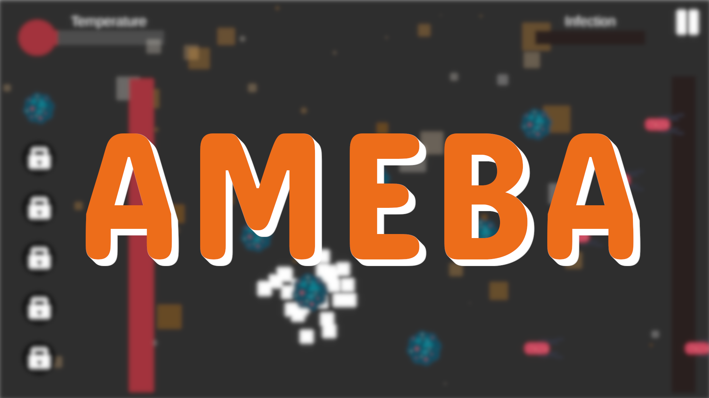
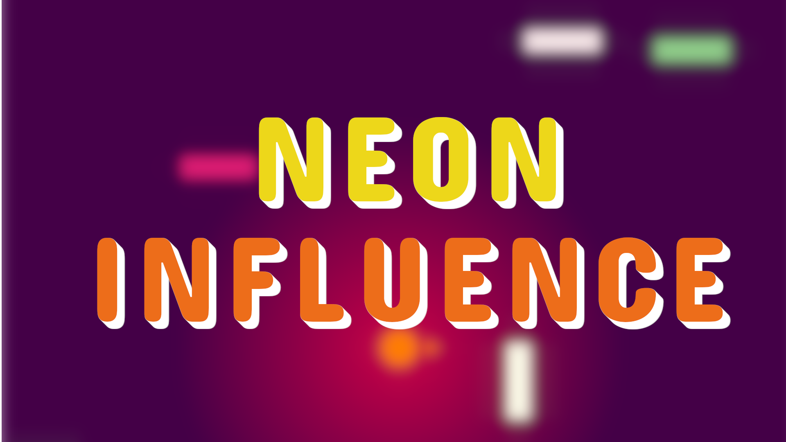
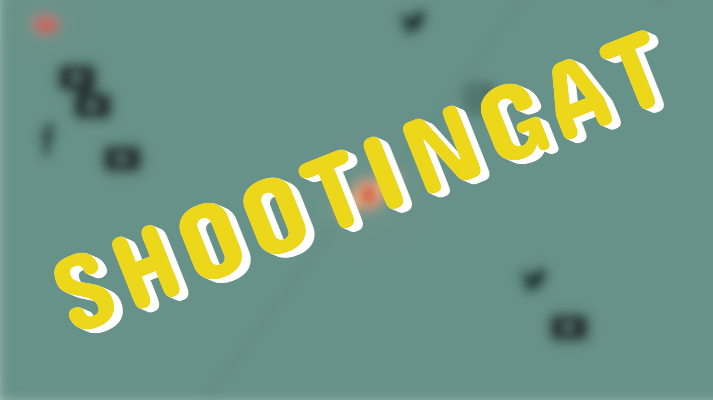

I have played videogames my whole life.
Before I entered university, I decided that I wanted to make games,
so that I could make other people feel what I've felt when playing.
I started learning Unity and have used it since.
I am a really curious and passionate person.
I love learning, and more if it is about programming or videogames.
Recent Work

Shootingat Resolved
2D Top Down Roguelike inspired by TBOI and Enter The Gungeon.
My objective when making this game was to learn about how
procedural generation worked, as well as learn about AI, using
algorithms like A* to program the enemies path calculation.
Game Trailer: Not Available Yet
Download Game: Not Available Yet
Source Code

Ameba
Casual real time 2D puzzle game in which you have to stop a dangerous infection from spreading through the body.
I wanted to learn how to make a level selector screen, as well as a good menu behaviour, UI animations and save & load system.
Game Trailer: Not Available Yet
Download Game
Source Code

Neon Influence
2D game for mobile phones. The objective of making this game was that I wanted to learn about how to make a game for mobile phones,
learning about touch input and all the problems that appear when developing for phones.
Game Trailer: Not Available Yet
Download Game
Source Code

Shootingat
It is the first real seriours game that I tried to develop. Before this game, I had made many prototypes and courses,
but I had never tried to make a whole game. Shootingat was my first one. It has an exponential difficulty, and rewards
players with powerups when they get certain amounts of score.
Game Trailer: Not Available Yet
Download Game
Source Code
Hard Skills
C# / Java / Python / C / C++ / R
Unity 2D and 3D
Soft Skills
Team Player
Learning Lover
Fast Learner
Fluent in English
Contact Me
{kind=link}
{kind=link}
{kind=link}